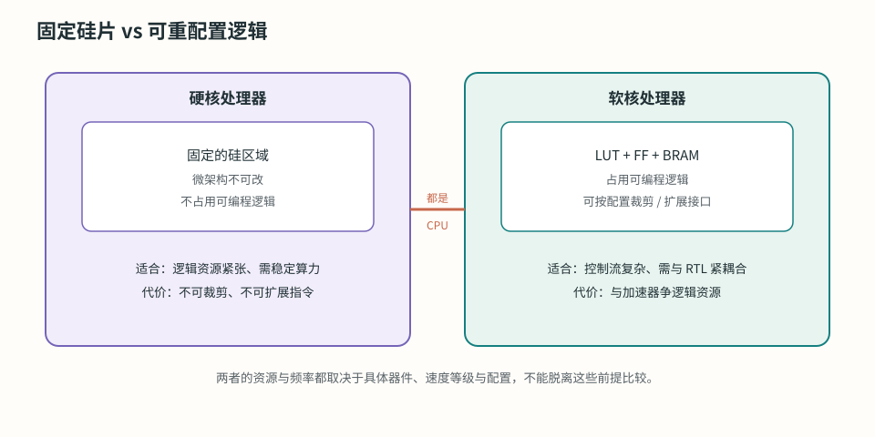
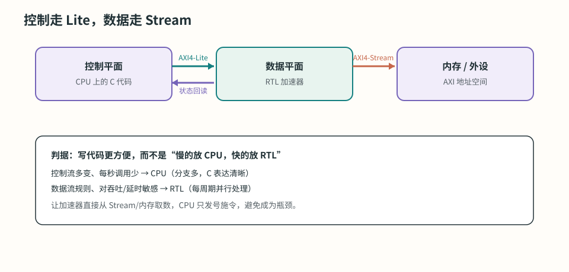

软核处理器集成：控制平面与数据平面的分工
在 FPGA 逻辑里放一个 CPU，不是因为缺处理器，而是为了让复杂的控制流能写成 C，同时把数据通路留在 RTL 里。理解这条分工线，才理解软核的位置。
01 / 软核处理器解决什么问题
如果一个任务用状态机写起来是一堆互相耦合的 case 与计时器，而用 C 写只是几个 if/while，那就到了考虑软核处理器的时候。软核（soft-core）是用 FPGA 逻辑资源（LUT、FF、BRAM）实现出来的 CPU，与它相对的是硬核（hard-core）——如部分 SoC 器件里集成的 ARM 处理器，那块硅区域固定存在，不消耗可编程逻辑。

把控制流交给 CPU、把手写死路交给 RTL，这种组合在需要“先判断再计算”的场景里非常自然，例如数据采集的参数调度、协议状态切换、人机交互。代价是：软核占用的 LUT/FF 本可以用于加速；同时系统的最高频率往往受限最深的那条路径。
02 / 常见软核与其可配置性
软核的一个关键特征是可配置：它不是一个固定电路，而是根据你在向导里勾选的选项生成 RTL。以 AMD 的 MicroBlaze 为例，它的参考手册（UG984）描述了可选的 FPU、MMU、指令/数据缓存、硬件乘除、异常与调试等配置项，以及可挂接的 AXI 接口。把 FPU、缓存、MMU 都关掉与全开的 MicroBlaze，占用的资源完全不同。
Intel 侧的 Nios II 在经典版本中提供经济/标准/快速等配置变体；新的 Nios V 则基于 RISC-V，直接使用可用的开源指令集。开源生态里还有一批 RISC-V 软核（如 PicoRV32、VexRiscv、SERV、Ibex），它们的目标各不相同：有的追求最小面积（位串行），有的追求可配置流水线与性能。
| 维度 | 为什么重要 |
|---|---|
| ISA（指令集） | 决定编译器、库与已有代码能否直接复用；RISC-V 与商用 ISA 的工具链不同 |
| 可配置项 | FPU、缓存、MMU、乘除器是否可选，直接决定资源与性能取舍 |
| 总线接口 | 是否原生支持 AXI4/AXI4-Lite/Stream，决定与 IP 集成的顺滑程度 |
| 调试与生态 | 是否有可用的调试模块、驱动库、RTOS 移植；没有生态意味着你自己写很多代码 |
| 许可与移植性 | 商用软核绑定厂商工具，开源核可跨厂商，但需要自己维护验证 |
不同核的“资源消耗”与“典型频率”常被拿来比较，但它们强烈依赖配置、器件与速度等级，不能脱离这些前提引用。本章不给出这类数字。
03 / 在 Block Design 里搭一个软核系统
厂商工具把搭建软核系统做成了一条向导链。以 Vivado 的 IP Integrator（UG994）为例，典型步骤是：
- 创建 Block Design：新建一个 .bd 画布，而不是从空顶层开始写 RTL。
- 加入 MicroBlaze IP：从 IP Catalog 把处理器拖入画布。
- Run Block Automation：向导会根据你的选择自动补上内存控制器（如 MIG）、AXI Interconnect、调试模块（MDM）、时钟（Clocking Wizard）与复位（Proc Sys Reset）等。
- 加入外设：拖入 AXI GPIO、AXI UART Lite、AXI Timer 等，再用 Run Connection Automation 自动连线。
- Validate Design：检查地址映射是否重叠、接口是否全部连接。
- Create HDL Wrapper：工具生成一个顶层 Verilog/VHDL，把 .bd 里的 IP 与连线例化成可综合代码。
向导帮你做的事，本质上就是第 17、第 19 章的手工工作：例化 IP、用 AXI 总线把主从接口连起来、分配地址、接好时钟与复位。理解这一点后，你会知道“自动”只省了连线的力气，并没有替你决定地址映射、时钟域与中断优先级——这些仍需你判断。
04 / 软件侧：Vitis 平台、应用与 BSP
硬件导出的不是比特流，而是一个描述硬件系统的文件（.xsa）。软件工具（AMD 的 Vitis，文档 UG1400）从这个文件生成 platform，其中包含硬件描述、驱动与 BSP（Board Support Package）。应用工程在这之上编译：
- 创建 Platform 工程：导入 .xsa，工具抽取外设清单与地址映射。
- 创建 Application 工程：选择模板（Hello World、外设测试等）。
- 配置 BSP：指定
stdin/stdout绑定的 UART、堆与栈大小、驱动参数。这些选项直接影响printf输出去向与可用内存。 - 编写 C 代码：调用驱动库 API（如
XGpio_Initialize()、XGpio_DiscreteWrite()），底层仍然是读写 AXI4-Lite 寄存器。 - 调试：通过 JTAG 下载、设断点、看寄存器；串口终端看输出。
平台与应用分离的意义在于：硬件一变，重新导出 .xsa 即可让软件重新生成地址宏与驱动，而不需要手改魔法数字。BSP 里的地址常量（形如 XPAR_*_BASEADDR）都是从硬件描述自动生成的。
05 / 控制平面与数据平面
软核系统的价值在用对分工。一个常见的划分是：
- 控制平面（跑在 CPU 上的 C）：任务调度、参数配置、异常处理、人机交互。这类逻辑分支多、每秒钟执行次数不多，写成 C 最自然。
- 数据平面（RTL）：滤波器、FFT、编解码、协议解析。这类逻辑每时钟周期都在跑、对延时与吞吐敏感，写成 RTL 才能并行。
- 桥梁：AXI4-Lite 用于少量控制寄存器配置，AXI4-Stream 用于批量数据搬运，AXI Interconnect 负责地址路由（参见第 19 章）。

一个常见误区是把大量数据拷贝进 CPU 逐字处理，再把结果写回去。这会把 CPU 变成瓶颈，也失去了 FPGA 的并行优势。正确做法是让加速器直接从流或内存取数，CPU 只负责发号施令。
06 / 裸机 C 访问自定义寄存器
自定义 AXI4-Lite 外设对上软件而言就是一组寄存器。下面的裸机框架用一个占空比寄存器驱动 PWM，并读回状态：
// 平台层提供基地址宏；寄存器组定义在自定义 IP 的 S00_AXI 中。
#include <xparameters.h>
#include <xil_io.h> // Xil_Out32 / Xil_In32
#include <xil_printf.h>
#define PWM_BASE XPAR_MY_PWM_0_S00_AXI_BASEADDR
#define PWM_DUTY 0x00 // 占空比寄存器
#define PWM_STATUS 0x04 // 只读状态寄存器（如“运行中”位）
static void pwm_set_duty(unsigned int duty) {
Xil_Out32(PWM_BASE + PWM_DUTY, duty);
}
int main(void) {
unsigned int duty = 500, period = 1000;
pwm_set_duty(duty);
xil_printf("PWM duty = %u / %u\r\n", duty, period);
while (1) {
unsigned int st = Xil_In32(PWM_BASE + PWM_STATUS);
if (st & 0x1u) { // 例：status[0] = 运行中
duty = (duty + 50) % period;
pwm_set_duty(duty);
}
// 实际工程用定时器/中断控制更新节拍，不用忙轮询
}
return 0;
}Xil_Out32 而不是裸指针：它包含必要的访存屏障，避免编译器或写缓冲把“配置寄存器”与“启动位”的写入重排——后者是硬件里真实存在的顺序依赖（参见 UG1400 对外设访问的说明）。07 / 软核还是硬核：如何判断
选型时先问三个问题，而不是先比 DMIPS：
- 逻辑资源很紧吗？ 若可编程逻辑已经吃满，用硬核处理器（如 SoC 里的 ARM）可以把资源全留给加速器；软核会与你的 RTL 争 LUT。
- 需要自定义指令或紧耦合接口吗？ 软核可以按需裁剪、扩展接口，甚至与数据通路做紧耦合；硬核的微架构固定。
- 对绝对性能/功耗敏感吗？ 硬核在同样工艺下通常有更高绝对性能与更优能效；软核需要根据配置与器件重新评估。
换言之，软核的选择理由是用可编程逻辑换灵活性与可裁剪性，而不是“造一个更快的 CPU”。如果只是需要一块稳定跑 C 的处理器，硬核或外挂 MCU 往往更省事。
08 / 边界与可验证条件
- 资源与频率不能从核名推断。 同一个核在不同配置（FPU/缓存/MMU 开关）、不同器件与不同速度等级下，资源与可达到频率都不同；必须看具体实现报告。
- 软核通常是关键路径之一。 处理器内部取指、译码、访存路径较深，往往是系统最高频率的制约点；换器件或换速度等级后必须重新做时序分析（见第 25 章）。
- 工具与 IP 版本强相关。 Block Automation 的行为、生成的地址映射与驱动 API 随版本变化，可复现性依赖记录工具版本与 .xsa 文件（见第 18 章）。
- 本章不给出任何 DMIPS、LUT 数或频率数值，因为它们离开具体配置与器件就无意义。
思考练习：为什么不能把一篇教程里“软核跑到某个频率”当作自己设计的结论？
可达频率取决于具体器件、速度等级、处理器配置（是否带缓存/浮点）、连接的从设备数量与实现策略。软核的取指/译码/访存路径往往是系统中最深的关键路径，换器件或换配置后必须重新做布局布线后的时序分析（见第 25 章）。因此资源与频率必须来自你自己的实现报告，而不是别人报告里的数字。